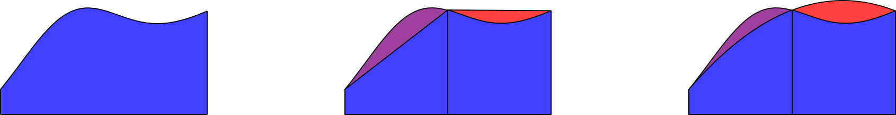

Operators
- ≡⍥⎕C
- ×≡+U⍟
- +≡×U*
- _Filter ← {⍵⌿⍨⍺⍺¨⍵}
About
Dyalog APL is not a functional programming language, but those familiar with funcitonal languages will recognise APL's operators as higher-order functions. Operators in Dyalog can be:
- monadic (take a single left operand as in
F/) - dyadic (take a left and a right operand as in
F⍣norF⍣G)
but they cannot be ambivalent.
Operands can be either
Primitive
We have already used a few primitive operators, but here is a complete summary of primitive operators.
Commonly used
| Operator | Calling syntax | Used for |
|---|---|---|
| Reduce | F/ F⌿ |
Accumulation |
| N-wise reduce | nF/ nF⌿ |
Windowed-reduction |
| Scan | F⍀ |
Accumulation with intermediate results |
| Power |
⌿/\⍀⍣⌸
Traditional
Just like their function counterparts, tradops have a definition syntax which reflects their calling syntax:
⎕VR'TradOp'
∇ {result}←{left}(LF TradOp RF)right
[1] ⍝ Dyadic operator which returns an ambivalent function
[2] :If 0=⎕NC'left'
[3] result←LF RF right
[4] :Else
[5] result←LF left RF right
[6] :EndIf
∇
3 (÷ TradOp +) 5 ⍝ Shy results
⎕←3 (÷ TradOp +) 5 ⍝ The result
0.2
Dop
Dops can be named or anonymous. They are just like dfns, except ⍺⍺ refers to its left operand and, if dyadic, ⍵⍵ refers to its right operand. For recursion, double-del ∇∇ is used to refer to the operator itself (and therefore must be used with operands to become a function when called), whereas a single del ∇ is used to refer to the derived function.
Quirks of primitive operators
Reduce and replicate
Reduce and replicate are both represented by forward-slash / (and forward-slash-bar ⌿ for their first-axis equivalents). Operators bind tightly (see the binding table in the online documentation) to function operands, so a forward-slash in a function train will be interpreted as reduce. To force it to be the function replicate, use atop and right-tack.
(2∘|⊢⍤/⊢)⍳10
Of course this is subjective, but sometimes even simple functions look nicer as dfns:
{⍵⌿⍨2|⍵}⍳10
Primitive dyadic operators
For no particular reason other than a technical limitation, dyadic primitive operators cannot be assigned to names. This is not a very useful thing to do in any case, but if you try this and find it does not work, just know that it is not supposed to work.
Problem set n
Numerical integration
This problem is from Phase 2 of the 2019 APL Problem Solving Competition.
The definite integral of a real valued function can be interpreted as the area under its graph over some interval (unless the function is negative or the endpoints are flipped but let's not get into that).

Contrary to what introductory courses in calculus might lead you to believe, symbolic integration is not in general feasible. The function you want to integrate might not have an antiderivative in closed form (expressed in terms of “standard” mathematical functions; and even if it does it might be too hard to find), or the function itself might not be given in closed form, but rather as the result of some measurement, simulation, or something similar. In such cases, numerical methods must be employed. There are several such methods, three of which we will implement in this problem set as APL user-defined operators.
Trapezoid Rule
In the trapezoid rule, the integral of a function \(f\) over an interal \([a,b]\) is estimated by dividing \([a,b]\) into \(n\) sub-intervals of size \(\Delta x=(b-a)/n\), and approximating \(f\) by a straight line within each (see the figure above). This means that \(f\) only needs to be evaluated in the \(n+1\) points \({x_i}=a+i\Delta x\). Putting it all together we get:
\({T_n}={{\Delta x}\over{2}}(f(x_0)+2f(x_1)+2f(x_2)+\cdots+2f(x_{n-1})+f(x_n))\)
Write an APL operator, _Trapezoid, that:
- takes a left operand which is a scalar function.
- takes a positive integer left argument which is the number of subintervals.
- takes a 2-element numeric vector right argument which represents an interval \([a,b]\) where \(a<b\).
- return \(T_n\) for the given function and interval.
Example:
1 ⍟_Trapezoid 1,*1
0.8591409142
(⍳4) ⍟_Trapezoid ¨ ⊂1,*1
0.8591409142 0.9623362015 0.9829803154 0.9903650088
Simpson's Rule
Using Simpson's rule the interval is similarly divided but, instead of approximating fby a straight line, the sub-intervals are paired up and \(f\) is approximated by a parabola (see the figure above). In general, this reduces the error but leads to the slightly more involved formula:
\(S_n = {{\Delta x}\over{3}} (f(x_0)+4f(x_1)+2f(x_2)+4f(x_3)+2f(x_4)+\cdots+4f(x_{n-1})+f(x_n))\)
Write an operator, _Simpson, that:
- takes a left operand which is a scalar function
- takes an even, positive, integer left argument which is the number of sub-intervals.
- takes a 2-element vector right argument which represents an interval \([a,b]\) where \(a<b\).
- returns \(S_n\) for the given function and interval.
Example:
2 ⍟_Simpson 1,*1
0.9967346307
(2×⍳4) ⍟_Simpson¨ ⊂1,*1
0.9967346307 0.9997079446 0.999936071 0.9999788955
Romberg's Method
Romberg's method generalizes the Trapezoid and Simpson's rules. As it turns out, given that \(f\) has enough continuous derivatives, by using Taylor's formula, the error of the Trapezoid rule can be expressed in terms of these. Then, using a technique known as Richardson extrapolation one can combine approximations using different numbers of subintervals to cancel out term after term of the error. Glossing over a ton of (really cool!) detail we can define the Romberg method using the following recurrence:
\({R^0_n}=T_{2^n}\)
\({R^m_n}={1\over{4^m-1}}(4^m R^{m-1}_n - R^{m-1}_{n-1})\)
Write an operator, _Romberg, that:
- takes a left operand which is a scalar function
- takes an integer left argument greater than or equal to \(0\) representing \(n\).
- takes a 2-element vector right argument which represents an interval \([a,b]\) where \(a<b\).
- returns \(R^n_n\) for the given function and interval.
Try to find a solution that performs no unnecessary computation. That is, \(f\) should be computed at most once in each point, and \(R^m_n\) should be computed at most once for each \(m\) and \(n\).
Example:
( ̄1+⍳4)⍟Romberg ̈⊂1,*1 ⍝ Recognize the first two values?
0.8591409142 0.9967346307 0.9999061655 0.9999984001
Filter
The _Filter operator returns only scalars of ⍵ which satisfy a predicate ⍺⍺. That is, ⍵ is part of the result where 1=⍺⍺ ⍵. Write the _Filter operator as a dop.
The _Apply_ operator will return its argument array ⍵, but with its right operand function ⍵⍵ applied to elements for which 1=⍺⍺ ⍵. Which primitive operator is this? What can the primitive operator do which is missing from the description of _Apply_?
When in Rome...
This problem is from the 2012 APL Problem Solving Competition.
Roman numerals, as used today, are based on seven symbols:
| Symbol | Value |
|---|---|
| I | \(1\) |
| V | \(5\) |
| X | \(10\) |
| L | \(50\) |
| C | \(100\) |
| D | \(500\) |
| M | \(1000\) |
Numbers are formed by combining symbols together and adding the values. For example, MMVI is \(1000 + 1000 + 5 + 1 = 2006\). Generally, symbols are placed in order of value, starting with the largest values. When smaller values precede larger values, the smaller values are subtracted from the larger values, and the result is added to the total. For example MCMXLIV is \(1000 + (1000 − 100) + (50 − 10) + (5 − 1) = 1944\). There has never been a universally accepted set of rules for Roman numerals. Because of this lack of standardization, there may be multiple ways of representing the same number in Roman numerals. Despite the lack of standardization, an additional set of rules has been frequently applied for the last few hundred years.
- The symbols I, X, C and M can be repeated three times in succession, but no more, unless the third and fourth are separated by a smaller value, as in XXXIX. D, L and V can never be repeated.
- I can be subtracted from V and X only. X can be subtracted from L and C only. C can be subtracted from D and M only. V, L and D can never be subtracted.
- Only one small-value symbol may be subtracted from any large-value symbol.
- A number written in Arabic numerals can be broken into digits. For example, 1903 is composed of \(1\), \(9\), \(0\), and \(3\). To write the Roman numeral, each of the non-zero digits should be treated separately. In the above example, 1000=CM and \(3\) is III. Therefore, \(1903\) is MCMIII.
Using this additional set of rules, there is only one possible Roman numeral for any given number. In addition, for this problem, we will add the following rules:
- \(0\) (zero) should be represented by an empty character vector
- Negative numbers should be preceded by an APL high minus (
¯) - Non-integers should be rounded up (0.5 and above rounds up)
- Larger numbers simply have a number of leading M's. For example, \(5005\) is represented as MMMMMV
The _Roman Operator
Write a monadic operator _Roman that takes a function left operand and derived a function which is able to do computation on Roman numerals.
'III'+_Roman'II'
V
⍳_Roman'X'
┌─┬──┬───┬──┬─┬──┬───┬────┬──┬─┐
│I│II│III│IV│V│VI│VII│VIII│IX│X│
└─┴──┴───┴──┴─┴──┴───┴────┴──┴─┘
+/_Roman⍳_Roman'X'
LV
Don't worry about "mixed" types. We don't expect this to work:
'II' 'III'⍴_Roman⍳6
But the following should:
'II' 'III'⍴_Roman⍳_Roman'VI'
┌──┬──┬───┐
│I │II│III│
├──┼──┼───┤
│IV│V │VI │
└──┴──┴───┘
Use ]Display to get the full description of the structure. Single Roman symbols are simple character scalars, whereas compound numbers are enclosed character vectors.
]Display 2 3⍴_Roman⍳_Roman'VI'
┌→────────────────┐
↓ ┌→─┐ ┌→──┐ │
│ I │II│ │III│ │
│ - └──┘ └───┘ │
│ ┌→─┐ ┌→─┐ │
│ │IV│ V │VI│ │
│ └──┘ - └──┘ │
└∊────────────────┘
Under Over
The over operator ⍺⍺⍥⍵⍵ was introduced in Dyalog in version 18.0. It can be thought of as applying the left operand function ⍺⍺ to arguments which have been pre-processed using the right operand function ⍵⍵.
Example:
The under (or dual) operator ⍺⍺⍢⍵⍵ has not been implemented in Dyalog. However, it can be partially modelled. It is the same as over ⍥, except that the inverse of ⍵⍵ is applied to the result.
Write the operator _U_ to model the behaviour of under.
Example:
3 +_U_⍟ 5 ⍝ Multiplication is addition under logarithm
15
3 ×_U_* 5 ⍝ Plus is times under power
8
'C'+_U_(⎕A∘⍳)'D' ⍝ 7=3+4
G
Key without ⌸
The key operator groups major cells of ⍵ according to keys ⍺, where ⍺≡⍥≢⍵. When called monadically, the derived function using key will using ⍵ itself as the keys. Write the operator _Key which works like ⌸ but does not use the ⌸ glyph.
Example:
{⍺,≢⍵}_Key 'mississippi'
m 1
i 4
s 4
p 2
{⍺(≢⍵)}_Key 5 2⍴1 0 0
┌───┬─┐
│1 0│2│
├───┼─┤
│0 1│2│
├───┼─┤
│0 0│1│
└───┴─┘
'aabcc'{⊂⍵}_Key 5 2⍴1 0 0
┌───┬───┬───┐
│1 0│0 0│1 0│
│0 1│ │0 1│
└───┴───┴───┘